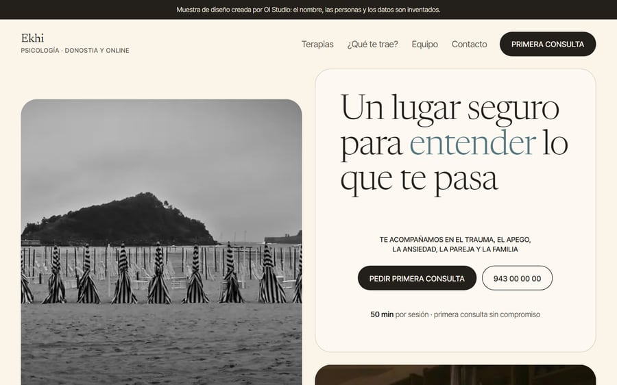

Primero, que se sienta bien recibido
El diseño de una consulta de psicología tiene que transmitir calma: colores suaves, mucho espacio, fotos reales (del espacio, no de personas sonriendo de banco de imágenes) y un lenguaje cercano. Si la web agobia, el paciente no pide cita.
Lo que debe decir
- Con qué ayudas, en palabras de la gente: ansiedad, duelo, relaciones, estrés, autoestima… no solo «psicología clínica».
- Cómo trabajas: enfoque, duración de las sesiones, si son individuales, de pareja o familiares, presenciales u online.
- Quién eres: formación, colegiación y una presentación humana, en primera persona.
- Cómo es la primera sesión: qué ocurre, cuánto dura, qué compromiso supone. La pregunta que más frena.
- Precio de la sesión, bonos o condiciones. Esconderlo genera desconfianza.
- Idiomas: en Euskadi, poder atender en euskera es un valor. Si lo haces, que se vea (y la web, en los dos idiomas).
- Un contacto fácil y discreto: formulario corto, correo y WhatsApp. Sin obligar a llamar.

Puedes recorrer la muestra de psicología en tu móvil para ver cómo se plantea.
Privacidad: más importante que en otras webs
- Los datos de salud son de categoría especial en el RGPD. El formulario no debe pedir motivo clínico detallado: nombre, forma de contacto y, como mucho, una frase.
- Sin analítica ni píxeles de publicidad en una consulta: quien visita una web de psicología no quiere que le persigan anuncios. Además te ahorra el banner de cookies.
- Política de privacidad clara, con quién trata los datos (tú) y cómo ejercer los derechos. Tienes la guía de textos legales.
- Aviso legal con colegiación: colegio y número de colegiado.
Lo que conviene evitar
- Prometer resultados o curas. La publicidad sanitaria tiene límites; consulta a tu colegio profesional qué puedes decir.
- Testimonios con datos clínicos. Aunque el paciente lo permita, es mejor no hacerlo público.
- Tecnicismos y diagnósticos en la portada. Quien llega no busca un manual, busca sentirse comprendido.
- Muchas ventanas emergentes y avisos. En esta web, menos es más.
Cómo captar pacientes sin perder la discreción
La mayoría de pacientes llegan por Google Maps y por recomendación. Cuida tu ficha de Google Business (categoría «psicólogo», horario, fotos del espacio) y escribe en la web las búsquedas reales: «psicólogo en Tolosa», «terapia de pareja en Gipuzkoa». Una página por tipo de ayuda le dice a Google a quién atiendes.

"En una consulta, cada palabra cuenta. Lee tu web en voz alta: si suena a folleto o a manual, reescríbela como si hablaras con alguien que acaba de entrar por la puerta."
¿Tienes una consulta de psicología?
Te preparo una muestra con tu consulta, gratis y sin compromiso, con el tono que quieras transmitir.
Preguntas frecuentes
¿Qué debe tener la web de un psicólogo?
Con qué ayudas, cómo trabajas, quién eres y tu colegiación, cómo es la primera sesión, precios, idiomas, un contacto sencillo y los textos legales, con la privacidad especialmente cuidada.
¿Puedo poner testimonios de pacientes?
Es mejor evitarlos o limitarte a reseñas públicas sin detalles clínicos. Son datos de salud y la publicidad sanitaria tiene límites; confírmalo con tu colegio profesional.
¿Es mejor no usar analítica en la web de una consulta?
Conviene: quien visita una web de psicología agradece no ser rastreado. Sin analítica ni publicidad tampoco necesitas banner de cookies.
¿Cuánto cuesta una web para una consulta de psicología?
Una web de negocio con tu enfoque, primera sesión, contacto y textos legales parte de 299 € + IVA en OI Studio. Si la quieres en euskera y castellano, se presupuesta antes de empezar.
Sigue leyendo: la web de una clínica de fisioterapia y web en euskera y castellano.